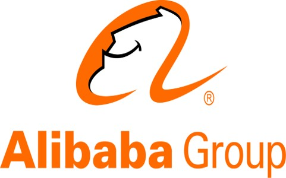
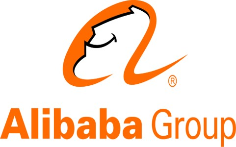

Bo Han
Home
|
Bo Han
Assistant Professor @ Department of Computer Science
BAIHO Visiting Scientist @ Imperfect Information Learning Team
[Google Scholar]
[Github] |
News
Jan 2022: I will be honored to co-author a ML monograph accepted by MIT Press.
Dec 2021: I will be serving as an Action Editor of TMLR.
Dec 2021: I will be serving as an Area Chair of ICML'22.
Oct 2021: I am honored to receive MSRA StraTrack Program 2021.
Sep 2021: I will be serving as an Action Editor of NN.
Jun 2021: I will be serving as an Area Chair of ICLR'22.
May 2021: I am honored to receive ICLR'21 Outstanding Area Chairs.
May 2021: I will be serving as an Editorial Board Reviewer of JMLR.
Apr 2021: I will be serving as a Leading Guest Editor of MLJ.
Mar 2021: I will be serving as an Area Chair of NeurIPS'21.
Sep 2020: I am honored to receive ICML'20 Top Reviewers.
Jul 2020: I will be serving as an Area Chair of ICLR'21.
Jun 2020: I am honored to receive RGC Early CAREER Scheme 2020.
Mar 2020: I will be serving as an Area Chair of NeurIPS'20.
Mar 2020: I am honored to receive RIKEN BAIHO Award 2019.
Research
-
My research interests lie in machine learning and deep learning. My long-term goal is to develop trustworthy intelligent systems, which can learn and reason from a massive volume of complex (e.g., weakly supervised, adversarial, causal, fair, and privacy-preserving) data (e.g, label, example, preference, domain, similarity, graph, and demonstration) automatically. Recently, I develop core machine learning methodology. Besides, I am actively applying our fundamental research into the healthcare domain (e.g., medical image understanding). I am heading Trustworthy Machine Learning Group.
-
My current research work center around four major themes (with representative works/projects; more information here):
Weakly Supervised Representation Learning: How can we train complex models robustly using weakly supervised information? [Survey] [NeurIPS'18] [NeurIPS'18] [ICML'19] [ICML'20] [ICML'21] [NeurIPS'21] [ICLR'22]
Security, Privacy and Robustness in Machine Learning: How can we preserve the security, privacy and robustness in training complex models? [ICML'20] [ICLR'21] [ICML'21] [NeurIPS'21] [ICLR'22]
Automated and Federated Machine Learning: How can we build automated and federated intelligent systems without human intervention? [ICML'20] [KDD'21]
Interdisciplinary Problems: How can we apply the above fundamental research to the healthcare domain? [Project'20]
Selected Publications
(* indicates advisees/co-advisees; see the full list here)
A Survey of Label-noise Representation Learning: Past, Present and Future.
B. Han, Q. Yao, T. Liu, G. Niu, I.W. Tsang, J.T. Kwok, and M. Sugiyama.
arXiv preprint arXiv:2011.04406, 2020, [PDF].
(the draft is kept updating; any comments and suggestions are welcome)Understanding and Improving Graph Injection Attack by Promoting Unnoticeability.
Y. Chen*, H. Yang, Y. Zhang, K. Ma, T. Liu, B. Han, and J. Cheng
In Proceedings of 10th International Conference on Learning Representations (ICLR'22), [PDF] [Code] [Poster].Adversarial Robustness through the Lens of Causality.
Y. Zhang*, M. Gong, T. Liu, G. Niu, X. Tian, B. Han, B. Schölkopf, and K. Zhang.
In Proceedings of 10th International Conference on Learning Representations (ICLR'22), [PDF] [Code] [Poster].Exploiting Class Activation Value for Partial-Label Learning.
F. Zhang*, L. Feng, B. Han, T. Liu, G. Niu, T. Qin, and M. Sugiyama.
In Proceedings of 10th International Conference on Learning Representations (ICLR'22), [PDF] [Code] [Poster].Fair Classification with Instance-dependent Label Noise.
S. Wu, M. Gong, B. Han, Y. Liu, and T. Liu.
In Proceedings of 1st Conference on Causal Learning and Reasoning (CLeaR'22), [PDF] [Code] [Poster].Probabilistic Margins for Instance Reweighting in Adversarial Training.
Q. Wang*, F. Liu, B. Han, T. Liu, C. Gong, G. Niu, M. Zhou, and M. Sugiyama.
In Advances in Neural Information Processing Systems 34 (NeurIPS'21), [PDF] [Code] [Poster].TOHAN: A One-step Approach towards Few-shot Hypothesis Adaptation.
H. Chi*, F. Liu, W. Yang, L. Lan, T. Liu, B. Han, W.K. Cheung, and J.T. Kwok.
In Advances in Neural Information Processing Systems 34 (NeurIPS'21), [PDF] [Code] [Poster].Instance-dependent Label-noise Learning under a Structural Causal Model.
Y. Yao, T. Liu, M. Gong, B. Han, G. Niu, and K. Zhang.
In Advances in Neural Information Processing Systems 34 (NeurIPS'21), [PDF] [Code] [Poster].Confidence Scores Make Instance-dependent Label-noise Learning Possible.
A. Berthon*, B. Han, G. Niu, T. Liu, and M. Sugiyama.
In Proceedings of 38th International Conference on Machine Learning (ICML'21), [PDF] [Code] [Poster] [News].Maximum Mean Discrepancy is Aware of Adversarial Attacks.
R. Gao*, F. Liu, J. Zhang, B. Han, T. Liu, G. Niu, and M. Sugiyama.
In Proceedings of 38th International Conference on Machine Learning (ICML'21), [PDF] [Code] [Poster].Learning Diverse-Structured Networks for Adversarial Robustness.
X. Du*, J. Zhang, B. Han, T. Liu, Y. Rong, G. Niu, J. Huang, and M. Sugiyama.
In Proceedings of 38th International Conference on Machine Learning (ICML'21), [PDF] [Code] [Poster].Geometry-aware Instance-reweighted Adversarial Training.
J. Zhang, J. Zhu*, G. Niu, B. Han, M. Sugiyama, and M. Kankanhalli.
In Proceedings of 9th International Conference on Learning Representations (ICLR'21), 2021, [PDF] [Code] [Poster].Robust Early-learning: Hindering the Memorization of Noisy Labels.
X. Xia, T. Liu, B. Han, C. Gong, N. Wang, Z. Ge, and Y. Chang.
In Proceedings of 9th International Conference on Learning Representations (ICLR'21), 2021, [PDF] [Code] [Poster].Learning with Group Noise.
Q. Wang*, J. Yao, C. Gong, T. Liu, M. Gong, H. Yang, and B. Han.
In Proceedings of 35th AAAI Conference on Artificial Intelligence (AAAI'21), 2021, [PDF] [Code].Device-Cloud Collaborative Learning for Recommendation.
J. Yao, F. Wang, K. Jia, B. Han, J. Zhou, and H. Yang.
In Proceedings of 27th ACM Conference on Knowledge Discovery and Data Mining (KDD'21), 2021, [PDF] [Poster].Instance-Dependent Positive and Unlabeled Learning with Labeling Bias Estimation.
C. Gong, Q. Wang*, T. Liu, B. Han, J. You, and J. Yang.
IEEE Transactions on Pattern Analysis and Machine Intelligence (TPAMI), 2021, [PDF].Provably Consistent Partial-Label Learning.
L. Feng, J. Lv, B. Han, M. Xu, G. Niu, X. Geng, B. An, and M. Sugiyama.
In Advances in Neural Information Processing Systems 33 (NeurIPS'20), [PDF] [Code] [Poster].Dual T: Reducing Estimation Error for Transition Matrix in Label-noise Learning.
Y. Yao, T. Liu, B. Han, M. Gong, J. Deng, G. Niu, and M. Sugiyama.
In Advances in Neural Information Processing Systems 33 (NeurIPS'20), [PDF] [Code] [Poster].Part-dependent Label Noise: Towards Instance-dependent Label Noise.
X. Xiao, T. Liu, B. Han, N. Wang, M. Gong, H. Liu, G. Niu, and M. Sugiyama.
In Advances in Neural Information Processing Systems 33 (NeurIPS'20), [PDF] [Code] [Poster].SIGUA: Forgetting May Make Learning with Noisy Labels More Robust.
B. Han, G. Niu, X. Yu, Q. Yao, M. Xu, I.W. Tsang, and M. Sugiyama.
In Proceedings of 37th International Conference on Machine Learning (ICML'20), [PDF] [Code] [Poster].Variational Imitation Learning from Diverse-quality Demonstrations.
V. Tangkaratt, B. Han, M. Khan, and M. Sugiyama.
In Proceedings of 37th International Conference on Machine Learning (ICML'20), [PDF] [Code] [Poster].Attacks Which Do Not Kill Training Make Adversarial Learning Stronger.
J. Zhang*, X. Xu, B. Han, G. Niu, L. Cui, M. Sugiyama, and M. Kankanhalli.
In Proceedings of 37th International Conference on Machine Learning (ICML'20), [PDF] [Code] [Poster].Searching to Exploit Memorization Effect in Learning from Noisy Labels.
Q. Yao, H. Yang, B. Han, G. Niu, and J.T. Kwok.
In Proceedings of 37th International Conference on Machine Learning (ICML'20), [PDF] [Code] [Poster].Are Anchor Points Really Indispensable in Label-noise Learning?
X. Xiao, T. Liu, N. Wang, B. Han, C. Gong, G. Niu, and M. Sugiyama.
In Advances in Neural Information Processing Systems 32 (NeurIPS'19), [PDF] [Code] [Poster].How does Disagreement Help Generalization against Label Corruption?
X. Yu*, B. Han, J. Yao, G. Niu, I.W. Tsang, and M. Sugiyama.
In Proceedings of 36th International Conference on Machine Learning (ICML'19), [PDF] [Code] [Slides] [Poster].Efficient Nonconvex Regularized Tensor Completion with Structure-aware Proximal Iterations.
Q. Yao, J.T. Kwok, and B. Han.
In Proceedings of 36th International Conference on Machine Learning (ICML'19), [PDF] [Code] [Poster].Towards Robust ResNet: A Small Step but A Giant Leap.
J. Zhang*, B. Han, L. Wynter, B. Low, and M. Kankanhalli.
In Proceedings of 28th International Joint Conference on Artificial Intelligence (IJCAI'19), [PDF] [Code] [Poster].Privacy-preserving Stochastic Gradual Learning.
B. Han, I.W. Tsang, X. Xiao, L. Chen, S.-F. Fung, and C. Yu.
IEEE Transactions on Knowledge and Data Engineering (TKDE), 2019, [PDF].Co-teaching: Robust Training of Deep Neural Networks with Extremely Noisy Labels.
B. Han, Q. Yao, X. Yu, G. Niu, M. Xu, W. Hu, I.W. Tsang, and M. Sugiyama.
In Advances in Neural Information Processing Systems 31 (NeurIPS'18), [PDF] [Code] [Poster].Masking: A New Perspective of Noisy Supervision.
B. Han, J. Yao, G. Niu, M. Zhou, I.W. Tsang, Y. Zhang, and M. Sugiyama.
In Advances in Neural Information Processing Systems 31 (NeurIPS'18), [PDF] [Code] [Poster].Millionaire: A Hint-guided Approach for Crowdsourcing.
B. Han, Q. Yao, Y. Pan, I.W. Tsang, X. Xiao, Q. Yang, and M. Sugiyama.
Machine Learning Journal (MLJ), 108(5): 831–858, 2018, [PDF] [Slides].Stagewise Learning for Noisy k-ary Preferences.
Y. Pan, B. Han, and I.W. Tsang.
Machine Learning Journal (MLJ), 107: 1333–1361, 2018, [PDF].Robust Plackett-Luce Model for k-ary Crowdsourced Preferences.
B. Han, Y. Pan, and I.W. Tsang.
Machine Learning Journal (MLJ), 107(4): 675–702, 2017, [PDF].
Brief Biography
-
Bo Han is currently an Assistant Professor of Computer Science and a Director of Trustworthy Machine Learning Group at Hong Kong Baptist University, and a BAIHO Visiting Scientist at RIKEN Center for Advanced Intelligence Project (RIKEN AIP), hosted by Masashi Sugiyama. He was a Postdoc Fellow at RIKEN AIP (2019-2020), advised by Masashi Sugiyama. He received his Ph.D. degree in Computer Science from University of Technology Sydney (2015-2019), advised by Ivor W. Tsang and Ling Chen. During 2018-2019, he was a Research Intern with the AI Residency Program at RIKEN AIP, working on trustworthy representation learning (e.g., Co-teaching and Masking) with Masashi Sugiyama, Gang Niu and Mingyuan Zhou. He also collaborates with Kun Zhang on causal representation learning (e.g., CausalAdv and CausalNL). He has served as area chairs of NeurIPS, ICML and ICLR, senior program committees of AAAI, IJCAI and KDD, and program committees of AISTATS, UAI and CLeaR. He has also served as action editors of Transactions on Machine Learning Research and Neural Networks, a leading guest editor of Machine Learning Journal, and an editorial board reviewer of Journal of Machine Learning Research. He received the RIKEN BAIHO Award (2019), RGC Early CAREER Scheme (2020) and MSRA StarTrack Program (2021).


 
